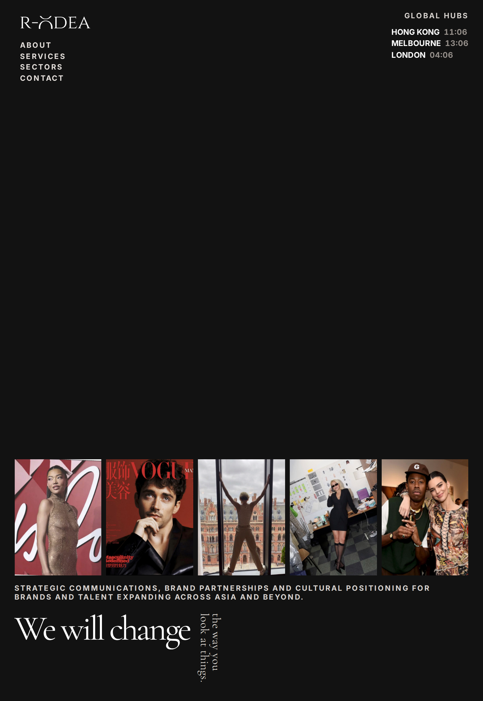

Device preview
This page shows how the R-ODEA homepage looks on iPhone and iPad. Intro previews play the real O animation. Homepage previews are still images. Open the live intro
The intro screen animates on the live site — the O spins once, then the Enter button appears. See it live
iPhone
iPad
